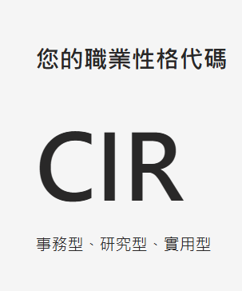
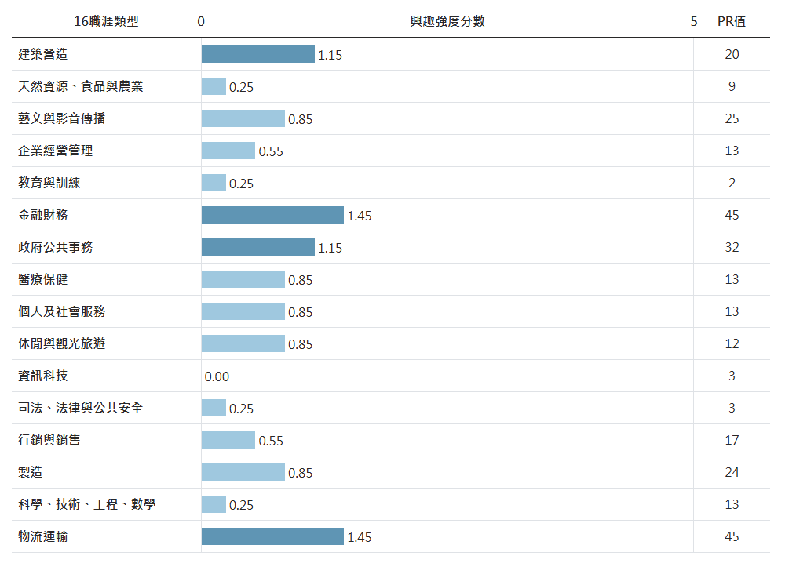
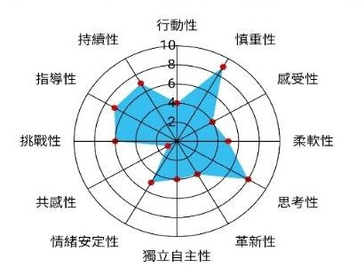
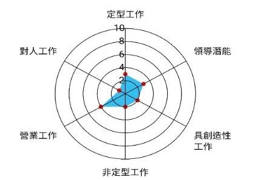
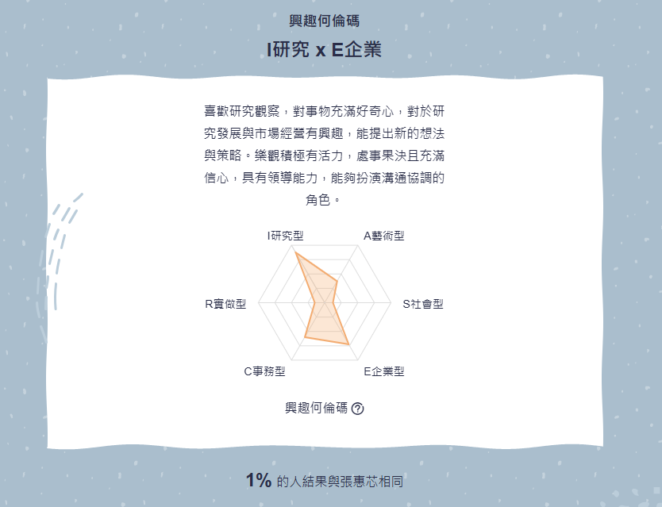
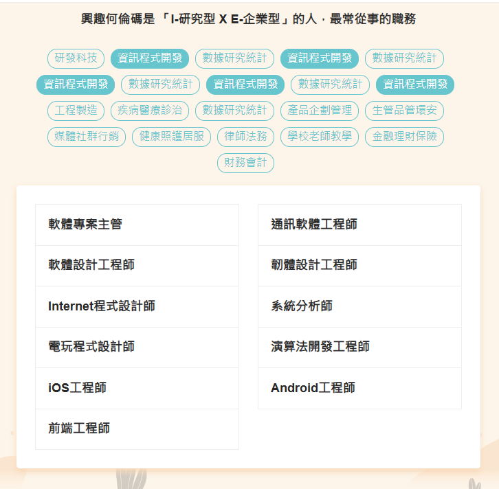

我的結果：
適合工作：

C事務型 : 「組織者」：謹慎的、依循規則、重視流程與精確度、喜歡組織整理
I研究型 : 「思考者」：理性的、重視理論與證據、喜歡分析與思考、追根究底
R實用型 : 「實做者」：耐心的、重視實用性、喜歡體能活動、喜歡操作工具
我的結果：
適合工作：

最高分：慎重性(9)、思考性(8)、持續性(7)、指導性(7)
適合工作：營業工作(4)
我的結果：
適合工作：

我的Holland碼類型為 : I研究型 & E企業型
I研究型 : 「思考者」：理性的、重視理論與證據、喜歡分析與思考、追根究底
E企業型 : 「影響者」：有彈性、勇於冒險與競爭、喜歡統籌與規劃、發揮影響力
測出你的Holland碼